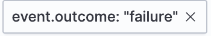
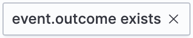
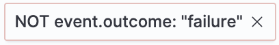
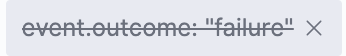

Timeline
edit[preview] This functionality is in technical preview and may be changed or removed in a future release. Elastic will work to fix any issues, but features in technical preview are not subject to the support SLA of official GA features.
Use Timeline as your workspace for investigations and threat hunting. You can add alerts from multiple indices to a Timeline to facilitate advanced investigations.
You can drag or send fields of interest to a Timeline to create the desired query. For example, you can add fields from tables and histograms on the Overview, Alerts, Hosts, and Network pages, as well as from other Timelines. Alternatively, you can add a query directly in Timeline by expanding the query builder and clicking + Add field.
In addition to Timelines, you can create and attach Timeline templates to detection rules. Timeline templates allow you to define the source event fields used when you investigate alerts in Timeline. You can select whether the fields use predefined values or values retrieved from the alert. For more information, refer to Create Timeline templates.
Create new or open existing Timeline
editTo make a new Timeline, choose one of the following:
- Go to the Timelines page (Investigations → Timelines), then click Create new Timeline.
- Go to the Timeline bar (which is at the bottom of most pages), click the button, then click Create new Timeline.
- From an open Timeline or Timeline template, click New → New Timeline.
To open an existing Timeline, choose one of the following:
- Go to the Timelines page, then click a Timeline’s title.
- Go to the Timeline bar, click the button, then click Open Timeline.
- From an open Timeline or Timeline template, click Open, then select the appropriate Timeline.
To avoid losing your changes, you must save the Timeline before moving to a different Elastic Security app page. If you change an existing Timeline, you can use the Save as new timeline toggle to make a new copy of the Timeline, without overwriting the original one.
Click the star icon () to favorite your Timeline and quickly find it later.
View and refine Timeline results
editYou can select whether Timeline displays detection alerts and other raw events, or just alerts. By default, Timeline displays both raw events and alerts. To hide raw events and display alerts only, click Data view to the left of the KQL query bar, then select Show only detection alerts.
Inspect an event or alert
editTo further inspect an event or detection alert, click the View details button. A flyout with event or alert details appears.
Configure Timeline event context and display
editMany types of events automatically appear in preconfigured views that provide relevant
contextual information, called Event Renderers. All event renderers are turned off by default. To turn them on, use the Event renderers toggle at the top of the results pane. To only turn on specific event renderers, click the gear ( ) icon next to the toggle, and select the ones you want enabled. Close the Customize event renderers pane when you’re done. Your changes are automatically applied to Timeline.
) icon next to the toggle, and select the ones you want enabled. Close the Customize event renderers pane when you’re done. Your changes are automatically applied to Timeline.
The example above displays the Flow event renderer, which highlights the movement of data between its source and destination. If you see a particular part of the rendered event that interests you, you can drag it up to the drop zone below the query bar for further investigation.
You can also modify a Timeline’s display in other ways:
- Add and remove fields from Timeline
- Create runtime fields and display them in the Timeline
- Reorder and resize columns
- Copy a column name or values to a clipboard
- Change how the name, value, or description of a field are displayed in Timeline
- View the Timeline in full screen mode
- Add or delete notes attached to alerts, events, or Timeline
- Pin interesting events to the Timeline
Add and remove fields from Timeline
editThe Timeline table shows fields that are available for alerts and events in the selected data view. You can modify the table to display fields that interest you. Use the sidebar to search for specific fields or scroll through it to find fields of interest. Fields that you select display as columns in the table.
To add a field from the sidebar, hover over it, and click the Add field as a column button (), or drag and drop the field into the table. To remove a field, hover over it, and click the Remove field as a column button ( ).
).
Use the Timeline query builder
editExpand the query builder by clicking the query builder button ( ) to the right of the KQL query bar. Drop in fields to build a query that filters Timeline results. The fields' relative placement specifies their logical relationships: horizontally adjacent filters use
) to the right of the KQL query bar. Drop in fields to build a query that filters Timeline results. The fields' relative placement specifies their logical relationships: horizontally adjacent filters use AND, while vertically adjacent filters use OR.
Collapse the query builder and provide more space for Timeline results by clicking the query builder button ( ).
).
Edit existing filters
editClick a filter to access additional operations such as Add filter, Clear all, Load saved query, and more:
Here are examples of various types of filters:
- Field with value
-
Filters for events with the specified field value:
 - Field exists
-
Filters for events containing the specified field:
 - Exclude results
-
Filters for events that do not contain the specified field value (
field with valuefilter) or the specified field (field existsfilter): - Temporarily disable
-
The filter is not used in the query until it is enabled again:
 - Filter for field present
-
Converts a
field with valuefilter to afield existsfilter.
When you convert a Timeline template to a Timeline, some fields may be disabled. For more information, refer to Timeline template legend.
Attach Timeline to a case
editTo attach a Timeline to a new or existing case, open it, click Attach to case in the upper right corner, then select either Attach to new case or Attach to existing case.
To learn more about cases, refer to Cases.
Manage existing Timelines
editYou can view, duplicate, export, delete, and create templates from existing Timelines:
- Go to Investigations → Timelines.
-
Click the All actions menu in the desired row, then select an action:
- Create template from timeline (refer to Create Timeline templates)
- Duplicate timeline
- Export selected (refer to Export and import Timelines)
- Delete selected
- Create query rule from timeline (only available if the Timeline contains a KQL query)
- Create EQL rule from timeline (only available if the Timeline contains an EQL query)
To perform an action on multiple Timelines, first select the Timelines, then select an action from the Bulk actions menu.
Export and import Timelines
editYou can export and import Timelines, which enables you to share Timelines from one space or Elastic Security instance to another. Exported Timelines are saved as .ndjson files.
To export Timelines:
- Go to Investigations → Timelines.
- Either click the All actions menu in the relevant row and select Export selected, or select multiple Timelines and then click Bulk actions → Export selected.
To import Timelines:
-
Click Import, then select or drag and drop the relevant
.ndjsonfile.Multiple Timeline objects are delimited with newlines.
Filter Timeline results with EQL
editUse the Correlation tab to investigate Timeline results with EQL queries.
When forming EQL queries, you can write a basic query to return a list of events and alerts. Or, you can create sequences of EQL queries to view matched, ordered events across multiple event categories. Sequence queries are useful for identifying and predicting related events. They can also provide a more complete picture of potential adversary behavior in your environment, which you can use to create or update rules and detection alerts.
The following image shows what matched ordered events look like in the Timeline table. Events that belong to the same sequence are matched together in groups and shaded red or blue. Matched events are also ordered from oldest to newest in each sequence.
From the Correlation tab, you can also do the following:
- Specify the date and time range that you want to investigate.
- Reorder the columns and choose which fields to display.
- Choose a data view and whether to show detection alerts only.
Use ES|QL to investigate events
editThe Elasticsearch Query Language (ES|QL) provides a powerful way to filter, transform, and analyze event data stored in Elasticsearch. ES|QL queries use "pipes" to manipulate and transform data in a step-by-step fashion. This approach allows you to compose a series of operations, where the output of one operation becomes the input for the next, enabling complex data transformations and analysis.
You can use ES|QL in Timeline by opening the ES|QL tab. From there, you can:
-
Write an ES|QL query to explore your events. For example, start with the following query, then iterate on it to tailor your results:
FROM .alerts-security.alerts-default,apm-*-transaction*,auditbeat-*,endgame-*,filebeat-*,logs-*,packetbeat-*,traces-apm*,winlogbeat-*,-*elastic-cloud-logs-* | LIMIT 10 | KEEP @timestamp, message, event.category, event.action, host.name, source.ip, destination.ip, user.name
This query does the following:
-
It starts by querying documents within the Security alert index (
.alerts-security.alerts-default) and indices specified in the Security data view. - Then, the query limits the output to the top 10 results.
-
Finally, it keeps the default Timeline fields (
@timestamp,message,event.category,event.action,host.name,source.ip,destination.ip, anduser.name) in the output.When querying indices that tend to be large (for example,
logs-*), performance can be impacted by the number of fields returned in the output. To optimize performance, we recommend using theKEEPcommand to specify fields that you want returned. For example, add the clauseKEEP @timestamp, user.nameto the end of your query to specify that you only want the@timestampanduser.namefields returned.- An error message displays when the query bar is empty.
-
When specifying data sources for an ES|QL query, autocomplete doesn’t suggest hidden indices, such as
.alerts-*. You must manually enter the index name or pattern.
-
It starts by querying documents within the Security alert index (
- Click the help icon () on the far right side of the query editor to open the in-product reference documentation for all ES|QL commands and functions.
- Visualize query results using Discover functionality.
Additional ES|QL resources
editTo get started using ES|QL, read the tutorial for using ES|QL in Kibana. Much of the functionality available in Kibana is also available in Timeline.
To find examples of using ES|QL for threat hunting, check out our blog.